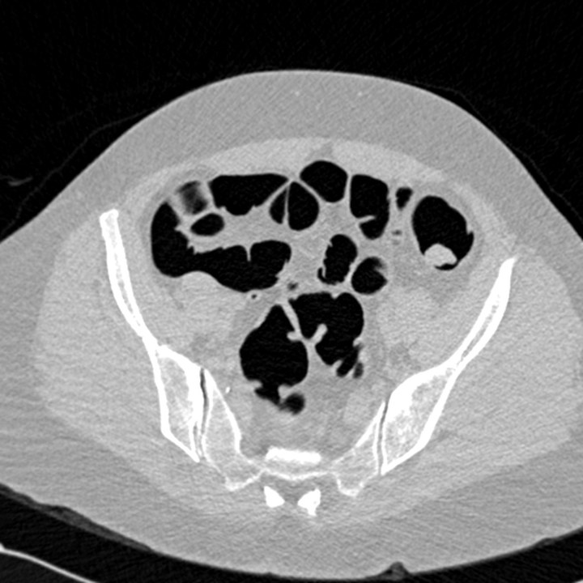
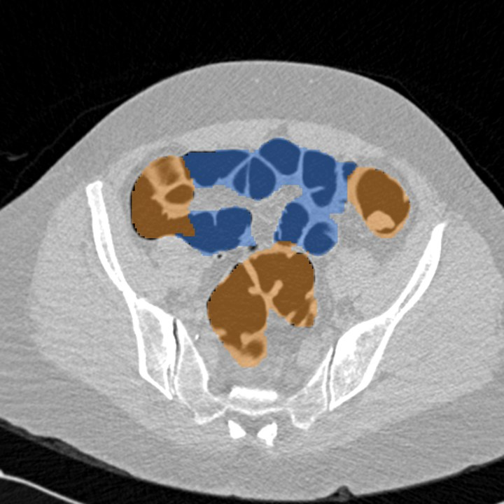
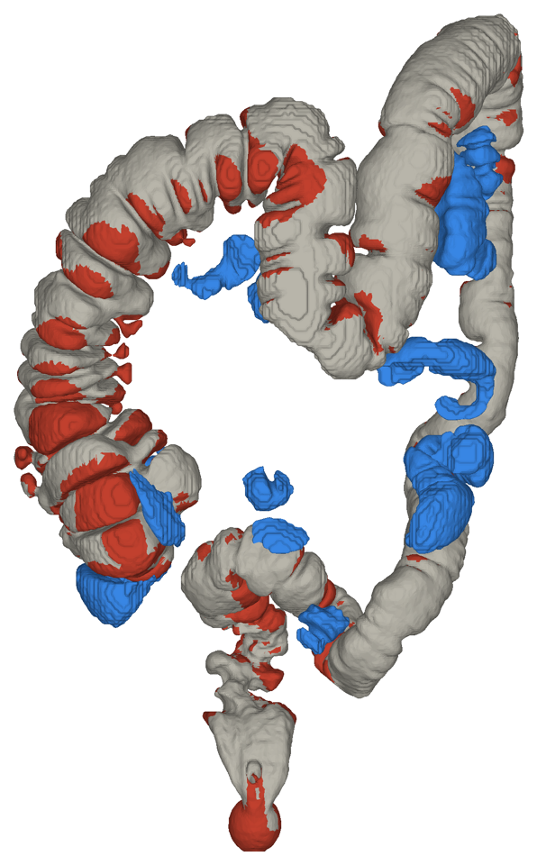
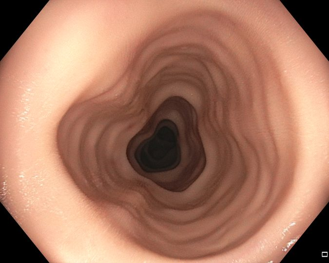
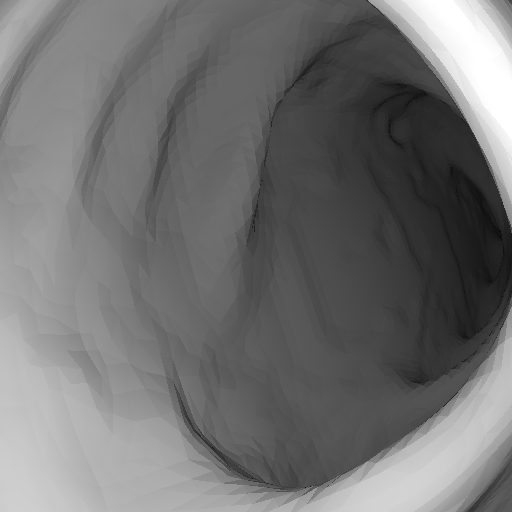
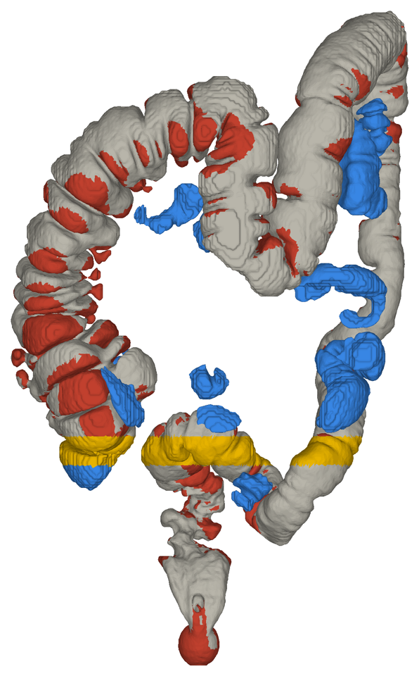

Đại tràng thật từ ảnh CT · rời khỏi C3VD
Nguyễn Hải Toàn
Kính gửi: TS. Mai Thanh Thái & PGS.TS. Hoàng Văn Xiêm
Thầy bấm thử ngay được ạ: công cụ xem 3D, chọn ACRIN patient 0233.
Phần 1
Hình dạng thật của đại tràng: từng nếp gấp, khúc cong, tính bằng mm.
Camera nội soi nhìn thấy gì từ bên trong, từng khung hình. Đây cũng chính là chế độ nhìn bên trong.
Mỗi khung hình được chụp ở đâu, hướng nào. Phần này mới biến video thành độ phủ.
Độ phủ cần cả ba: với mỗi khung hình, ống kính thực sự đã nhìn thấy mảng thành ruột nào?
| C3VD v1 (bản em đang dùng) | C3VDv2 | |
|---|---|---|
| Số hình dạng đại tràng | 1 | 2 |
| Hình dạng lấy từ đâu | Chuyên gia tạo hình (anaplastologist) nặn trên máy, in 3D rồi phủ silicone | Cùng cách |
| Số đoạn | 4: manh tràng, ngang, xuống, sigma. Không có đại tràng lên, không có trực tràng | 7–8 đoạn mỗi đại tràng |
| Số lớp sơn mỗi đoạn | 4 (t1–t4), cùng một hình dạng | 4 (t1–t4), cùng một hình dạng |
| Video · khung hình | 22 · 10.015 | 192 · 169.371 |
Giải phẫu thật, dựng từ CT.
825 bệnh nhân thay vì một đại tràng.
Polyp thật, có
kích thước, mô bệnh học và số lát cắt.
Video nội soi thật khớp với hình dạng 3D đã biết. Không bộ nào khác có thứ này, nên từ giờ em phải tự dựng video.
| Bộ dữ liệu | Giải phẫu thật | Video thật | Liên kết video ↔ 3D | Tổn thương thật |
|---|---|---|---|---|
| C3VD | Không: một đại tràng nặn tay | Có: ống soi thật, mô silicone | Có | Không |
| RealSynCol | Có: 10 bệnh nhân (lấy từ ACRIN) | Không: ảnh dựng, camera lỗ kim | Có kèm, nhưng không khớp | Không |
| ACRIN CT | Có: 825 bệnh nhân | Không | Không | Có: kích thước, lát cắt, mô bệnh học |
| HyperKvasir (tạm gác) | Không: chỉ ảnh 2D | Có: bệnh nhân thật | Không | Chỉ có hình dáng bên ngoài |
Nên phải ghép lại: CT cho giải phẫu và tổn thương, tự dựng hình cho video và tư thế camera, C3VD để chứng minh phương pháp đúng.
Phần 2

| # | Bước | Bệnh nhân 0233 |
|---|---|---|
| 1 | Xếp các lát cắt thành một khối 3D | 501 × 512 × 512 |
| 2 | Giữ mọi điểm tối hơn −700 HU: đó là khí | khí trong ruột |
| 3 | TotalSegmentator đánh dấu đại tràng (mô hình đã công bố) | cả cơ quan |
| 5 | Bọc bề mặt theo mép khí (marching cubes) | 300.000 tam giác |
| 6 | Vạch đường camera đi giữa lòng ruột | 1.197 mm |


đã thấy chưa bao giờ thấy túi bị tách, không tính
Mô phỏng, không phải ca nội soi thật: 150 vị trí camera, đi một chiều dọc đường tâm, ống kính nội soi thật. Bấm vào thành ruột trong công cụ xem 3D để xem khung hình đã chụp chỗ đó.
Phần 3


Em tự chọn đường đi nên tư thế từng khung hình biết chính xác. Bài toán còn lại là làm hình ảnh trông thật.
Phần 4

Bệnh nhân 0233 có một polyp 18 mm, ghi ở lát cắt nằm ngửa số 353.
Dải vàng: mọi thành ruột trong khoảng ±10 lát cắt (±8 mm). Một mặt cắt phẳng đi qua đại tràng cuộn khúc ở ba chỗ:
| Ở đâu | Dọc đường đi | Bên |
|---|---|---|
| Manh tràng | 0–30 mm | phải · chỉ 37% đánh giá được |
| Đại tràng xuống | 800–870 mm | bên trái |
| Quai sigma | 960–1.110 mm | ngang qua vùng chậu |
Polyp nằm ở một trong ba chỗ này. Nếu ở manh tràng thì ảnh nằm ngửa này không đủ, cần thêm ảnh nằm sấp.
Chưa có mesh chuẩn để so. 18% thành ruột nằm trong các túi bị tách. Cách kiểm tra: phân đoạn thêm ảnh nằm sấp, chiều dài và thể tích phải khớp.
Là mô hình, học trên CT thường chứ không riêng CT đại tràng. Hai cách độc lập đồng ý, nhưng chưa phải chuẩn vàng.
Đã khoanh dải tìm; chưa định vị được polyp.
Kích thước (mm) thì rõ. Mã đoạn đại tràng không có chú giải.
Bệnh nhân có hai lần chụp nằm ngửa cách nhau một phút. Em giả định lần đầu, đếm từ đỉnh vùng chụp.
Nội soi thật đăng ký với CT của cùng bệnh nhân: theo em biết, chưa có bộ công khai.
Nguyễn Hải Toàn
Dữ liệu: C3VD (Bobrow và cs., 2023, CC BY-NC-SA 4.0) · RealSynCol (Zenodo 19705803, CC BY 4.0) · ACRIN 6664 (Johnson và cs., NEJM 2008), ảnh từ TCIA, doi:10.7937/K9/TCIA.2015.NWTESAY1 (CC BY 3.0) · TotalSegmentator (Wasserthal và cs., Radiology: AI 2023)